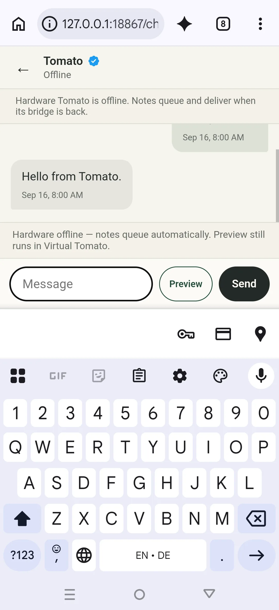

Browser
The web chat is the supported general client on desktop and mobile browsers. It provides human chat, the pinned Tomato contact, queued messaging, and explicit Virtual Tomato preview.
SUPPORTED SURFACES
Envelop’s general public client is the website. Native software exists only for the operator role and is not presented as a public download.
The web chat is the supported general client on desktop and mobile browsers. It provides human chat, the pinned Tomato contact, queued messaging, and explicit Virtual Tomato preview.

The source-supported package, version 0.2.0, can act as the nearby Tomato bridge and test chat client. It is an operator surface, not the general public client.
The maintained private app combines owner chat, administration, compute framing, and a foreground Tomato bridge. There is no public APK or website download.
Envelop inside Tomato OS is maintained with Tomato. It receives the binary device protocol through one current radio connection. The backend separately allows one unexpired authenticated bridge lease at a time.